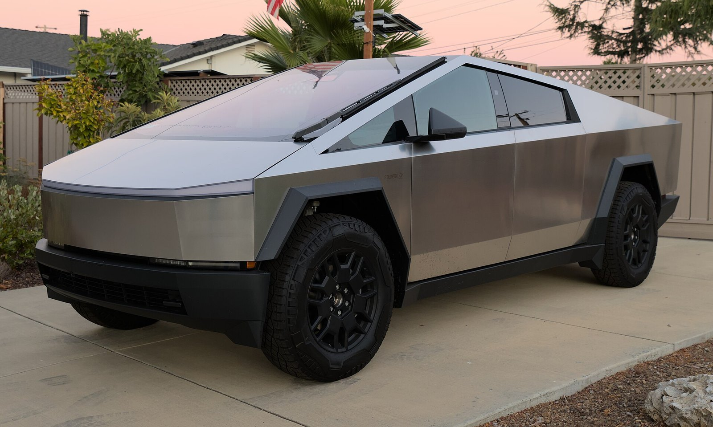

Truck · Review
Cybertruck

Promo clip
Verdict
Fascinating product. Wrong continent for most of this audience until regulation and width catch up.
Buy if
US owners, collectors, and people following the exoskeleton experiment from afar.
Skip if
Skip as a European daily. Width, type approval, and lanes are not vibes — they are blockers.
The pitch
Cybertruck is Tesla building the meme out of stainless steel. Steer-by-wire, 48-volt architecture, vault bed — it is a rolling R&D note that also tows.
On the road
Owners describe a quiet, quick truck that ignores ruts. The steering is the story: once you adapt, going back to a yoke or a wheel feels older.
Europe & Ireland
This page exists so the timeline does not lie to you. Homologation, width on boreens, and parking reality make it a spectator sport here for now. Watch policy, not renderings.
Software & FSD
Same FSD ambition, different body and sensor geometry. US rollouts teach the stack; European approval is a separate mountain — and this body makes that mountain taller.